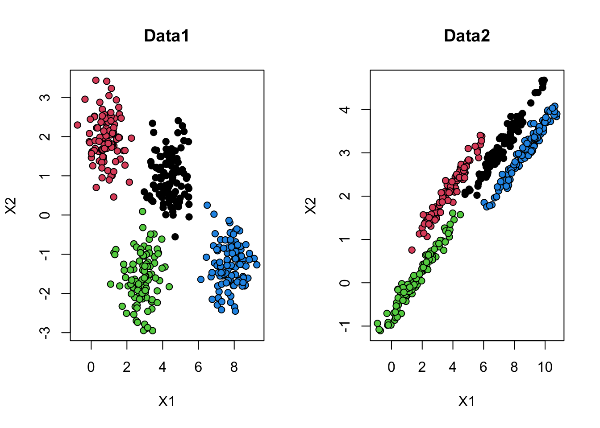
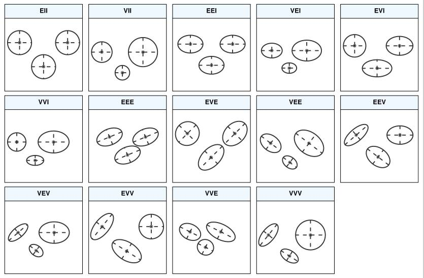
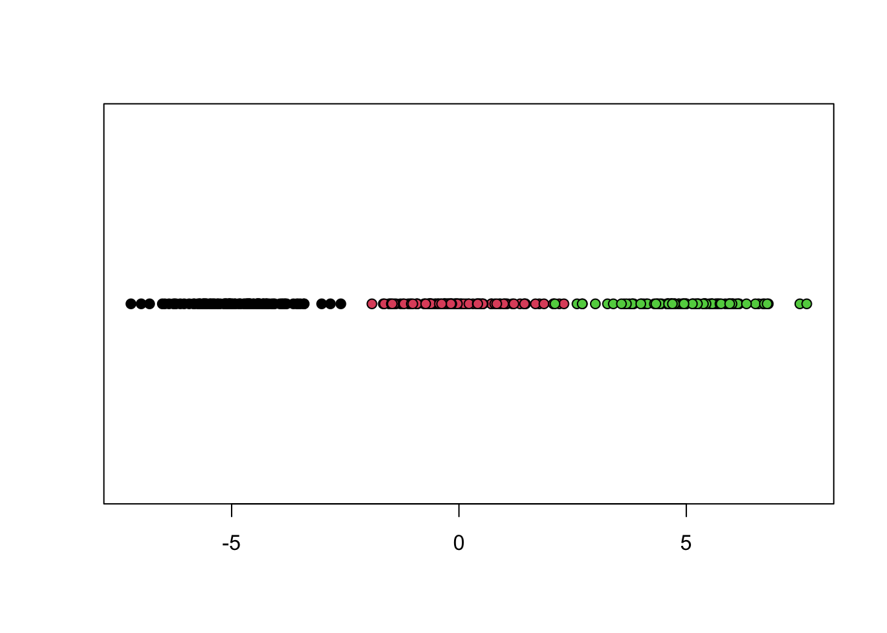

Lab: GMM & EM
- You are free to apply this lab in or Python.
- In , we are going to use the
mclustpackage. - An excellent documentation of
mclustcan be found here. - In Python, you can use
sklearn.mixturemodule in which you can find theGaussianMixture()class. - Note that the
GaussianMixture()class does not provide the same automatic determination of the number of components like in ’smclustpackage. But you can use the classAutoGMMCluster()from thegraspologic.cluster.autogmmmodule. - Description of
AutoGMMCluster()from here: This method expands upon the existing Sklearn framework by allowing the user to automatically estimate the best hyperparameters for a Gaussian mixture model. In particular, the idealn_components_is estimated byAutoGMMfrom a range of possible values given by the user.AutoGMMalso sweeps over multiple covariance structures.
Note
In the first part of this lab you will learn how to fit a Gaussian Mixture Model (GMM) using or Python. You will Compare \(k\)-means and GMM on artificial data (2-D data). You will also fit a GMM on univariate (1-D) simulated data.
In the second part of this lab you will build an algorithm from scratch. Your algorithm must fit a GMM model using the Expectation-Maximization (EM) technique on any multi dimensional dataset.
Expectation-Maximization (EM)
GMM vs \(k\)-means
In this section, we will use two artificial (simulated) datasets in which we know the ground truth (true labels) in order to compare the performances of \(k\)-means and GMM. To fit a GMM using EM technique in or Python you need to use specified packages. Please refer to the note above.
1. Download and import Data1 🔢 and Data2 🔢. Plot both of the datasets on the same window. Color the observations with respect to the ground truth, like in Figure 1.
2. Apply \(k\)-means on both datasets with 4 clusters. Plot both of the dataset on the same window and color the observations with respect to \(k\)-means results. Interpret the results.
Tip
One way to think about the \(k\)-means model is that it places a circle (or, in higher dimensions, a hyper-sphere) at the center of each cluster, with a radius defined by the most distant point in the cluster. This radius acts as a hard cutoff for cluster assignment within the training set: any point outside this circle is not considered a member of the cluster. You can try to visualize the circles on your plots.
3. Now fit a GMM model on the datasets. To do so in , load the mclust library. Then you can use the function Mclust() on your data (this function will choose automatically the number of mixtures, basing on BIC criterion). Use the clustering results from your GMM model to visualize the results on both of the datasets, color the observations with respect to the clusters obtained from the GMM model. Interpret the results.
In the following questions from this section, explore the mclust library and what it offers. Apply its functions on Data2.
Tip
mclust is a contributed package for model-based clustering, classification, and density estimation based on finite normal mixture modelling. It provides functions for parameter estimation via the EM algorithm for normal mixture models with a variety of covariance structures, and functions for simulation from these models. Also included are functions that combine model-based hierarchical clustering, EM for mixture estimation and the Bayesian Information Criterion (BIC) in comprehensive strategies for clustering, density estimation and discriminant analysis. Additional functionalities are available for displaying and visualizing fitted models along with clustering, classification, and density estimation results.
4. Show the summary of the GMM model you fitted on Data2. Explain what it shows.
5. mclust package offers some visualization. To plot your two-dimensional data, use the standard plot function applied on your model. Apply the following code, given that the model is named gmm_model, and interpret what it shows.
plot(gmm_model, what = "classification")
plot(gmm_model, what = "uncertainty")6. mclust package uses the Bayesian Information Criterion (BIC) to choose the best number of mixtures. To see the values of BIC for different number of mixtures use the following code.
plot(gmm_model, what = "BIC")Information criteria are based on penalised forms of the log-likelihood. As the likelihood increases with the addition of more components, a penalty term for the number of estimated parameters is subtracted from the log-likelihood. The BIC is a popular choice in the context of GMMs, and takes the form
\[ \text{BIC} \approx 2 \ell (X|\hat{\theta}) - \nu \log (n)\]
where \(\theta\) is the set of parameters (in GMM it is \(\theta=\{\mu,\Sigma,\pi\})\), and \(\ell (X|\hat{\theta})\) is the log-likelihood at the Maximum Likelihood Estimators \(\hat{\theta}\) for the model, \(n\) is the sample size, and \(\nu\) is the number of estimated parameters. We select the model that maximises BIC.
Tip
What you see on the figure showing the BIC values are different parameterisations of the within-group covariance matrix \(\Sigma_k\). In GMM, clusters are ellipsoidal, centered at the mean vector \(\mu_k\), and with other geometric features, such as volume, shape and orientation, determined by the covariance matrix \(\Sigma_k\).

7. Though GMM is often categorized as a clustering algorithm, fundamentally it is an algorithm for density estimation. That is to say, the result of a GMM fit to some data is technically not a clustering model, but a generative probabilistic model describing the distribution of the data. Density estimation plays an important role in applied statistical data analysis and theoretical research. A density estimate based on GMM can be obtained using the function densityMclust(). Apply it on Data2 and visualize the estimated densities (show an “image” and a “perspective” plot of the bivariate density estimate).
EM on 1D
In this part you must fit a GMM model on a one dimensional simulated data.
8. Create a data table of 300 observations in which you have two columns:
- The first column contains generated data. Those data are generated from three Gaussian distributions with different parameters.
- The second column corresponds to the groud truth (every observation was generated from which Gaussian).
- Hint: functions you may need are
rnorm(),rep(),rbind()orcbind(). - You must of course set a seed (your sutdent_pk). An example of 9 generated values from three Gaussians is shown in the following table:
| X | source |
|---|---|
| -5.6264538 | 1 |
| -4.8163567 | 1 |
| -5.8356286 | 1 |
| 1.5952808 | 2 |
| 0.3295078 | 2 |
| -0.8204684 | 2 |
| 5.4874291 | 3 |
| 5.7383247 | 3 |
| 5.5757814 | 3 |
9. Show your generated data on one axe (this kind of figures are called stripchart), color them with respect to ground truth, you must obtain something like:

10. Plot the histogram corresponding to your generated data. Interpret it.
11. Fit a GMM model on your generated data. Print the summary and visualize your results. Explain your results.
12. Apply a density estimate on your generated data and visualize it. Interpret the obtained figure.
EM from scratch
In this second part of this PW you will build a GMM model from scratch, you must develop the EM technique to fit the model.
2.1 Generate a two-dimensional dataset from a \(k\)-component Gaussian mixture density with different means and different covariance matrices. It is up to you to choose the mixing proportions \(\{\pi_1,\ldots,\pi_k\}\).
2.2 Implement the EM algorithm to fit a GMM on your generated data:
- Initialize the mixing proportions and the covariance matrices (e.g., you can initialize with equal mixing proportions and Identity covariance matrices).
- Initialize the means “randomly” (by your own choice of \(k\)).
- In the EM training loop, store the value of the observed-data log-likelihood at each iteration.
- At convergence, plot the log-likelihood curve.
2.3 Create a function that selects the number of mixture components by computing the values of BIC criterion for \(k\) varying from 1 to 10.
2.4 On your generated data, compare your results obtained with the algorithm you developed and the ground truth (in terms of the chosen number of mixture components; and in terms of error rate).
2.5 Apply the algorithm you developed on Iris 🔢 dataset.
Tip
To visualize your results on Iris dataset, you can use PCA projection and coloring with respect to clustering results.
The package mclust provides also a dimensionality reduction technique in function MclustDR().
◼